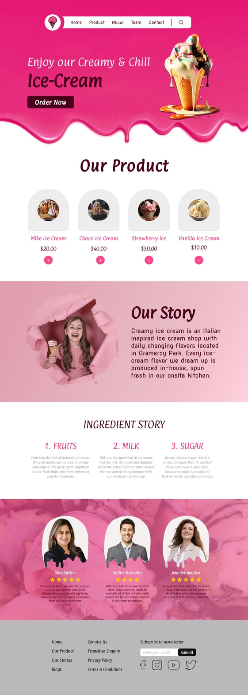

Ice Cream Web Layout
A full web layout for an ice cream brand, with an expressive hero section, product grid, and a warm storytelling approach.

Project Overview
This project focused on delivering a user-centered design solution that solves a real problem in a modern, visually refined way. The goal was to create an experience that feels intuitive, looks beautiful, and aligns with the brand’s identity and business objectives.
Problem Statement
Users were facing friction points in the existing experience — unclear navigation, inconsistent visual language, and lack of responsiveness across devices. The challenge was to redesign the experience from the ground up with a research-first approach, addressing both usability gaps and aesthetic shortcomings.
Research & Insights
Through user interviews, competitive analysis, and heuristic evaluation, we identified core pain points: cognitive overload, poor information hierarchy, and missing feedback states. These insights directly shaped the design direction and feature prioritization.
Design Process
Starting with low-fidelity wireframes in Figma, I mapped user flows and information architecture. After testing and iteration, mid-fidelity prototypes were created, refined through feedback sessions, and evolved into high-fidelity UI designs with a complete design system including components, spacing tokens, and color guidelines.
Final UI Design
The final design features a clean, minimal interface with strong typographic hierarchy, consistent component usage, and delightful micro-interactions. The design system ensures scalability and consistency across all screens and future releases.
Outcome & Impact
The redesigned experience showed measurable improvements: increased task completion rates, reduced user drop-off, and positive feedback from usability testing participants. The project demonstrated the tangible business value of investing in research-driven, thoughtful design.